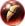
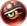
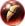
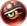

 Presa de Lobo
Aurora
 Sacrifício
Sacrifício
 Olho de Águia
 Luz Estelar
Luz Estelar
Eco
Este é um site feito por fã em homenagem ao Champions Legion!
 Presa de Lobo
Aurora
Sacrifício
 Olho de Águia
Luz Estelar
Eco
Nivan é um mago de pick off, procure boas oportunidades e use seu combo para eliminar as fontes de dano do time inimigo.
Na lane phase, use a primeira habilidade no segundo minion. Dessa forma, a habilidade irá espalhar nos outros dois e você irá limpar a onda mais rápido.
Nas teamfights, tente acertar sua garra espectral no maior número de alvos possível para causar dano em mais inimigos.
Como a build é totalmente focada em dano, sem itens de assistência pessoal(como roubo de vida mágico) procure se posicionar bem e usar com sabedoria o feitiço de regeneração e a cura da torre. Ter uma Judith aliada supriria bem essa falta.
Use a segunda habilidade para levantar inimigos, a primeira para causar dano e stackar a sintonia psiônica e por fim a ultimate para causar dano explosivo e lançar choques arcanos.
Ordem de upgrade das habilidades: 3ª → 1ª → 2ª.